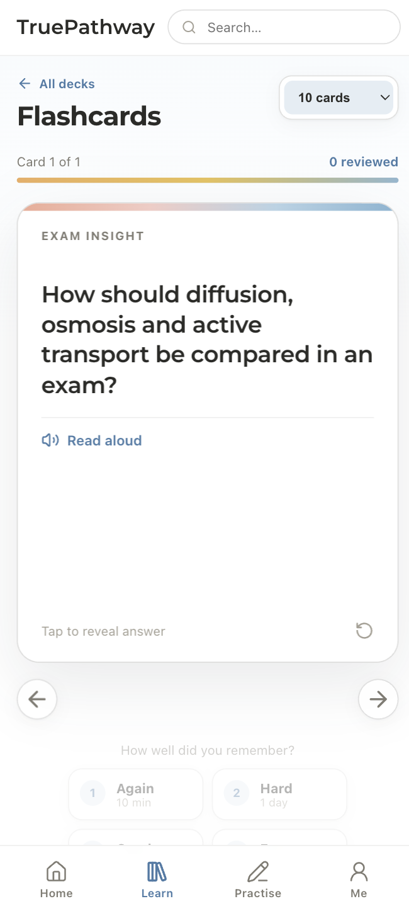

Course-based structure
NSW HSC subjects and pathways organise questions, revision notes and progress around the courses students are actually studying.
Product Case Study · EdTech · 2026
A cross-platform NSW HSC Year 12 learning and revision product connecting courses, practice, flashcards, official papers, mock exams, review tools and progress in one structured study experience.
Web experience


iOS experience


The challenge
Year 12 students move between subjects, practice questions, revision notes, official papers and mock exams while trying to understand what has been completed and what needs attention next.
TruePathway brings those activities into one consistent system, keeping course context, progress and review tools visible across both web and iOS.
Core experience
NSW HSC subjects and pathways organise questions, revision notes and progress around the courses students are actually studying.
Practice, official papers, mock exams and target tests support movement from topic learning into assessment readiness.
Topic decks, read-aloud support, recall controls and a mistake notebook turn completed work into structured revision.
Cross-platform journey
Enter through the relevant HSC subject and pathway.
Work through questions, notes and topic materials.
Use flashcards, mistakes and target tests.
Return to progress and move toward mock exams.
Product direction
The web interface uses the available space for broad course navigation, detailed dashboards and large content libraries. The iOS experience keeps the same hierarchy but reshapes it for focused study sessions, progress checks and flashcard review on a smaller screen.
The product remains in demo testing, with a phased launch planned for August 2026. No public performance or user metrics are claimed at this stage.
Next project
FrameDreaming→